Ανδρεαδάκης Αντώνης 2013030059
Αναθεωρημένη έκδοση (Νοέμβριος 2026): οι ασκήσεις 1 και 3 ξαναγράφτηκαν μετά από διόρθωση του κώδικα.
Στην άσκηση αυτή υλοποιήθηκε ο αλγόριθμος K-NN για κατηγοριοποίηση κειμένου, δηλαδή για την κατάταξη κειμένων φυσικής γλώσσας σε προκαθορισμένο αριθμό κατηγοριών. Η βάση δεδομένων είναι ένα υποσύνολο της WebKB και περιέχει 1.396 ιστοσελίδες από 4 πανεπιστήμια της Αμερικής, χωρισμένες σε 4 κατηγορίες (course, faculty, project, student), με λεξικό 4.749 λέξεων. Οι κατηγορίες δεν είναι ισομεγέθεις (310, 374, 168 και 544 έγγραφα αντίστοιχα).
Εντροπία λέξεων. Για κάθε λέξη j υπολογίζουμε το βάρος εντροπίας ej = 1 + Σi pij log2 pij / log2 N, όπου pij = fij / Σi fij είναι η συχνότητα της λέξης στο έγγραφο i διαιρεμένη με τη συνολική συχνότητά της σε όλα τα έγγραφα και N το πλήθος των εγγράφων. Τιμή κοντά στο 1 σημαίνει ότι η λέξη εμφανίζεται σε ελάχιστα έγγραφα, ενώ τιμή κοντά στο 0 ότι είναι ομοιόμορφα κατανεμημένη σε όλα.
Νέο λεξικό. Κρατάμε τις R λέξεις με το μικρότερο βάρος εντροπίας, δηλαδή τις συχνές λέξεις που εμφανίζονται σε πολλά έγγραφα. Στον περιορισμένο πίνακα εφαρμόζουμε τον μετασχηματισμό TF-IDF και κανονικοποιούμε κάθε έγγραφο ώστε να έχει μοναδιαίο μέτρο.
Κενά έγγραφα. Μερικά έγγραφα δεν περιέχουν καμία από τις R επιλεγμένες λέξεις (25 για R = 100 και 15 για R = 300), οπότε το διάνυσμά τους είναι μηδενικό. Τα έγγραφα αυτά δεν περιέχουν πληροφορία και αφαιρούνται πριν από την ταξινόμηση. Ο λόγος εξηγείται στα συμπεράσματα.
K-NN. Για κάθε δείγμα ελέγχου υπολογίζουμε την απόστασή του από όλα τα δείγματα εκπαίδευσης, είτε με την ευκλείδεια απόσταση είτε με την απόσταση συνημιτόνου (1 − cosine similarity), ταξινομούμε τις αποστάσεις και αναθέτουμε την κατηγορία που πλειοψηφεί στους K πλησιέστερους γείτονες.
Αξιολόγηση. Χρησιμοποιούμε 5-fold cross validation, με τα δείγματα κάθε κατηγορίας μοιρασμένα ισόποσα στους 5 φακέλους. Η επίδοση κάθε φακέλου είναι το ποσοστό των δειγμάτων ελέγχου του φακέλου που ταξινομήθηκαν σωστά, και η συνολική επίδοση είναι ο μέσος όρος των 5 φακέλων.
| R | K | Χωρίς τα κενά έγγραφα | Με τα κενά έγγραφα | ||
|---|---|---|---|---|---|
| Ευκλείδεια | Cosine | Ευκλείδεια | Cosine | ||
| 100 | 1 | 70,83% | 70,83% | 67,26% | 69,55% |
| 3 | 71,41% | 71,41% | 62,39% | 71,28% | |
| 5 | 73,52% | 73,52% | 58,74% | 72,99% | |
| 10 | 75,27% | 75,27% | 47,00% | 74,64% | |
| 300 | 1 | 72,84% | 72,84% | 36,54% | 72,05% |
| 3 | 72,56% | 72,56% | 28,23% | 71,20% | |
| 5 | 74,95% | 74,95% | 27,86% | 73,86% | |
| 10 | 76,83% | 76,83% | 37,11% | 76,94% | |
Οι δύο αποστάσεις είναι ισοδύναμες. Επειδή όλα τα διανύσματα έχουν μοναδιαίο μέτρο, ισχύει d2 = 2 − 2·cos, άρα η ευκλείδεια απόσταση και η απόσταση συνημιτόνου κατατάσσουν τους γείτονες με την ίδια σειρά. Πράγματι, χωρίς τα κενά έγγραφα οι δύο μετρικές δίνουν ακριβώς την ίδια επίδοση σε κάθε περίπτωση.
Τα κενά έγγραφα καταστρέφουν την ευκλείδεια απόσταση. Ένα μηδενικό διάνυσμα απέχει ακριβώς 1 από κάθε μοναδιαίο διάνυσμα, δηλαδή λιγότερο από κάθε πραγματικό γείτονα με ομοιότητα συνημιτόνου κάτω από 0,5. Για R = 300 το 67% των εγγράφων δεν έχει κανέναν γείτονα με ομοιότητα πάνω από 0,5, οπότε ως «πλησιέστεροι γείτονές» τους επιλέγονται τα κενά έγγραφα, που ανήκουν και στις 4 κατηγορίες. Αν τα κρατήσουμε, η επίδοση της ευκλείδειας πέφτει στο 28–37% για R = 300. Επιπλέον, επειδή όλα τα κενά έγγραφα ισαπέχουν, το αποτέλεσμα εξαρτάται από τη σειρά ταξινόμησης των ισοβαθμιών και δεν είναι αναπαραγώγιμο. Η απόσταση συνημιτόνου δεν επηρεάζεται ουσιαστικά (διαφορά έως 1,4 μονάδες), γιατί θεωρεί το μηδενικό διάνυσμα ως το πιο απομακρυσμένο.
Επίδραση των K και R. Η επίδοση αυξάνεται ελαφρά με περισσότερους γείτονες και με περισσότερες λέξεις: για R = 300 από 72,8% (K = 1) σε 76,8% (K = 10). Η αύξηση δεν είναι αυστηρά μονότονη ως προς το K, και διαφορετικός τυχαίος χωρισμός των φακέλων μεταβάλλει το αποτέλεσμα με τυπική απόκλιση έως 0,7 μονάδες, άρα διαφορές της τάξης της μίας μονάδας δεν είναι σημαντικές.
Επιλογή λέξεων. Η κατεύθυνση της επιλογής έχει τη μεγαλύτερη σημασία. Αν κρατήσουμε τις 100 λέξεις με το μεγαλύτερο βάρος εντροπίας (σπάνιες λέξεις), 1.151 από τα 1.396 έγγραφα μένουν κενά και η επίδοση πέφτει στο 22,9%.
Σύγκριση με τη βάση αναφοράς. Η καλύτερη επίδοση είναι 76,8% (R = 300, K = 10). Επειδή οι κατηγορίες δεν είναι ισομεγέθεις, η σωστή βάση σύγκρισης δεν είναι το 25% αλλά το 39,0%, που πετυχαίνει κανείς αν προβλέπει πάντα τη μεγαλύτερη κατηγορία (student).
Εδώ υλοποιήσαμε τον αλγόριθμο k-means, ώστε να συμπιέσουμε μια εικόνα. Παρακάτω βλέπουμε γραφικά πώς δουλεύει ο αλγόριθμος βήμα προς βήμα και στη συνέχεια τις συμπιεσμένες εικόνες για κάθε διαφορετικό Κ.
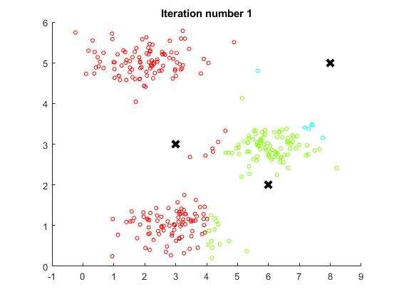
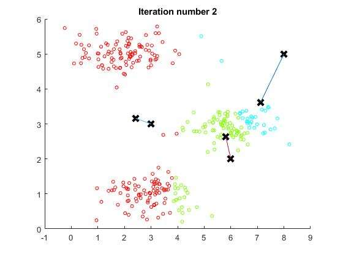
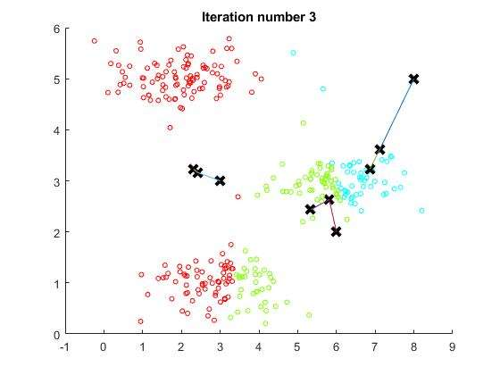
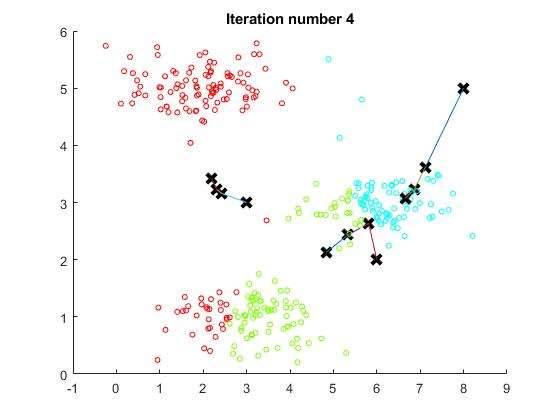
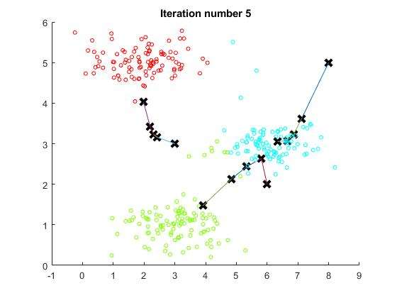
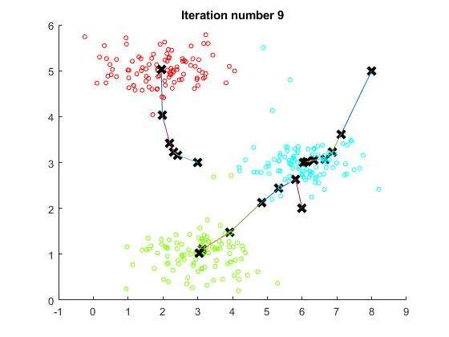
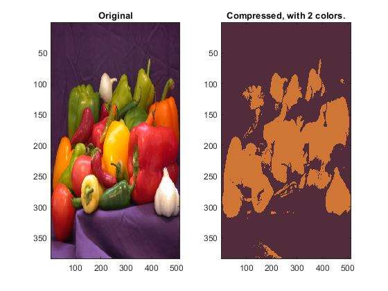
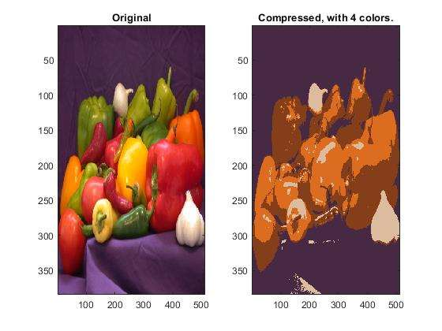
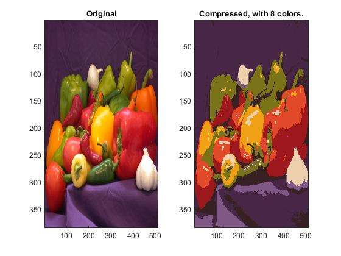
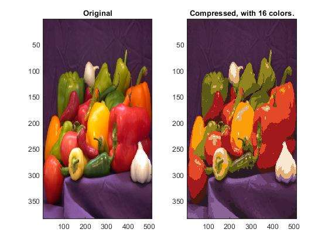
Παρατηρούμε λοιπόν ότι όσο μεγαλύτερη είναι η τιμή του Κ, τόσο πιο ευδιάκριτο είναι το αποτέλεσμα.
Η άσκηση αυτή είχε σκοπό να υλοποιήσουμε τον αλγόριθμο Expectation Maximization (EM), ώστε να εκπαιδεύσουμε τις παραμέτρους ενός μοντέλου Gaussian Mixture (GMM). Δοκιμάσαμε τον αλγόριθμο στα δεδομένα Fisher iris (150 λουλούδια, 4 χαρακτηριστικά, 3 είδη) με K = 3 συνιστώσες και τον συγκρίναμε με τον k-means.
Αρχικοποίηση. Εκτελούμε τον k-means και κάθε ομάδα του γίνεται μία συνιστώσα: η πιθανότητα μίξης είναι το ποσοστό των δειγμάτων της ομάδας, ενώ η μέση τιμή και ο πίνακας συνδιασποράς υπολογίζονται από τα δείγματά της.
Βήμα E. Για κάθε δείγμα xn και κάθε συνιστώσα k υπολογίζουμε την εκ των υστέρων πιθανότητα γnk = πk N(xn | μk, Σk) / Σj πj N(xn | μj, Σj). Οι υπολογισμοί γίνονται με λογαρίθμους, για αριθμητική ευστάθεια.
Βήμα M. Ενημερώνουμε τις παραμέτρους με τις εκτιμήσεις μέγιστης πιθανοφάνειας, σταθμισμένες με τα γnk: Nk = Σn γnk, πk = Nk / N, μk = Σn γnk xn / Nk και Σk = Σn γnk (xn − μk)(xn − μk)T / Nk.
Τερματισμός. Τα δύο βήματα επαναλαμβάνονται μέχρι να σταματήσει να αυξάνεται η λογαριθμική πιθανοφάνεια των δεδομένων (ή το πολύ για 200 επαναλήψεις).
Ταξινόμηση. Κάθε δείγμα ανατίθεται στη συνιστώσα με τη μεγαλύτερη τιμή πk N(x | μk, Σk).
Μέτρο σύγκρισης. Η αρίθμηση των ομάδων που επιστρέφουν ο GMM και ο k-means είναι αυθαίρετη (η ομάδα 1 δεν αντιστοιχεί απαραίτητα στο είδος 1). Γι' αυτό, πριν υπολογίσουμε το accuracy, αντιστοιχίζουμε τις ομάδες στα είδη: δοκιμάζουμε όλες τις αντιστοιχίσεις ένα προς ένα και κρατάμε την καλύτερη.
| Αλγόριθμος | Accuracy | Λάθος ταξινομημένα (από 150) |
|---|---|---|
| GMM (EM) | 96,67% | 5 |
| k-means | 89,33% | 16 |
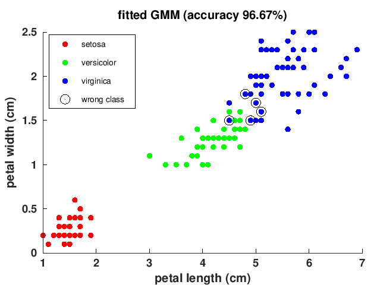
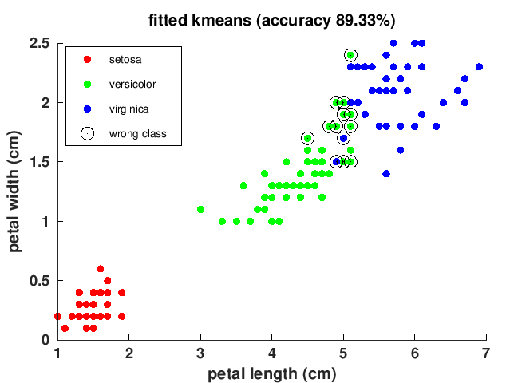
Και οι δύο αλγόριθμοι ξεχωρίζουν τέλεια το είδος setosa, που απέχει πολύ από τα άλλα δύο. Όλα τα λάθη βρίσκονται στην περιοχή όπου επικαλύπτονται τα είδη versicolor και virginica.
Ο GMM πετυχαίνει καλύτερη επίδοση (96,67% έναντι 89,33%), επειδή κάθε συνιστώσα έχει τον δικό της πλήρη πίνακα συνδιασποράς και μπορεί να περιγράψει επιμήκεις ομάδες με διαφορετικό προσανατολισμό και μέγεθος. Ο k-means βασίζεται μόνο στην ευκλείδεια απόσταση από το κέντρο κάθε ομάδας, δηλαδή υποθέτει σιωπηρά σφαιρικές ομάδες ίδιου μεγέθους, και γι' αυτό χωρίζει τα δύο επικαλυπτόμενα είδη σε λάθος σημείο.
Τα αποτελέσματα ήταν ίδια σε 5 διαδοχικές εκτελέσεις, παρότι η αρχικοποίηση του k-means είναι τυχαία. Ο αλγόριθμος EM συγκλίνει γενικά σε τοπικό μέγιστο της πιθανοφάνειας, οπότε η αρχικοποίηση με k-means (με 5 επανεκκινήσεις) βοηθά να ξεκινά από καλό σημείο.